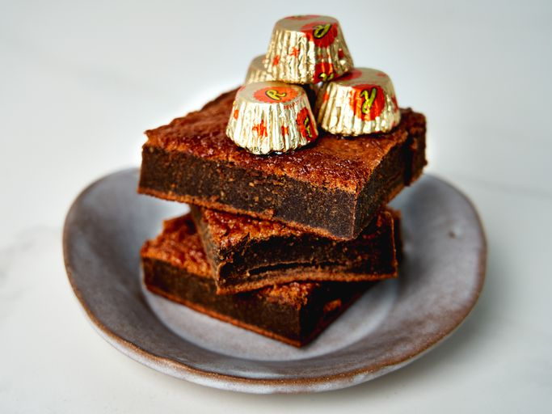

Reeses brownies

Description
Hi! Today we will learn how to make delicious brownies for dessert. Let yourself be sweetened
by the exquisite chocolate, so let's get started!
Ingredients
- 1 (17.6-oz.) bag miniature chocolate peanut butter cups, such as Reeses®
- 5 large eggs
Steps
- Preheat oven to 350 degrees F (175 degrees C). Line an 8x8 baking dish with parchment
and lightly coat with cooking spray.
- Place peanut butter cups in a medium microwave-safe bowl and microwave in 30 second
intervals, stirring in between, about 2 minutes total, until smooth. Let cool slightly.
- Using an electric mixer or whisk, beat eggs until frothy . Slowing drizzle in chocolate
while mixing until well incorporated. Pour batter into prepared pan.
- Bake in the preheated oven until a toothpick inserted in center comes out clean,
22 to 26 minutes. Let cool completely before cutting.